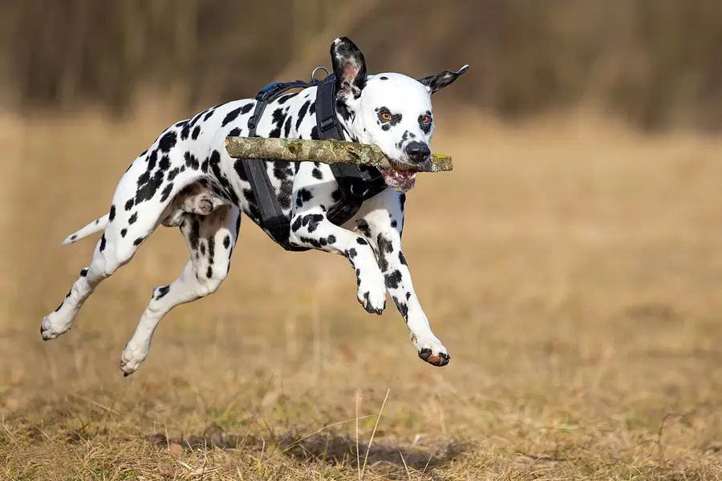

Dog training: the reward based approach
Veterinary behavior experts recommend reward based training for all dogs: you teach the behavior you want and reward it, instead of punishing mistakes. The American Veterinary Society of Animal Behavior says the evidence shows reward based methods are more effective than aversive ones and better for welfare and the dog and owner relationship, and that there is no evidence aversive training is ever necessary.

Why reward based training
The American Veterinary Society of Animal Behavior's 2021 position statement summarizes the research this way:
- It works better. Reward based methods have been shown to be more effective than aversive methods. In one survey study (Hiby and colleagues, 2004) obedience was highest in dogs trained only with rewards, lowest in dogs trained only with aversive methods, and in between for a mix of the two.
- It is kinder. In observational studies, dogs trained with aversive tools showed more stress behaviors during training, such as a tense or lowered body, lip licking, tail lowering, lifting a front paw, panting, yawning and yelping.
- It does not create problems. Survey studies link aversive training to later aggression and anxiety. Surveys cannot prove cause and effect, but AVSAB points out that if aversive methods solved problem behaviors, you would expect the opposite pattern.
- Even for recall. Recall is the most common reason owners use shock collars, yet a 2020 study (China and colleagues) found no difference in the proportion of ignored cues between shock collar training and reward based training, and the reward trained dogs responded faster.
Reward based training does not mean "anything goes". AVSAB stresses that dogs learn best with structure, routine and clear boundaries, taught without fear, intimidation or pain.
How reward based training works
The idea is simple: behavior that is rewarded is repeated. You make the right choice easy, mark the moment it happens, and pay for it with something your dog values.
- Marker
- A click from a clicker or a short word such as "yes" that tells the dog exactly which moment earned the reward.
- Reward
- Whatever your dog wants right now: small soft treats, a toy, a game, praise, or access to sniffing or greeting.
- Luring
- Guiding the dog into a position with a treat held at its nose, then fading the lure into a hand signal.
- Capturing
- Marking and rewarding something the dog does on its own, such as lying down on its bed.
- Shaping
- Rewarding small steps toward a final behavior, for example a glance at the mat, then a step onto it, then lying on it.
- Management
- Arranging the environment so the unwanted behavior cannot be practiced while you teach an alternative: a baby gate, a lead, or putting the shoes away.
Keep sessions short (a few minutes), end while your dog is still keen, and practice in easy places before busier ones.
First skills to teach
Name and attention
Say your dog's name once; the moment it looks at you, mark and reward. Repeat in different rooms, then outside.
Sit
Hold a treat at the dog's nose and move it slowly up and back over its head. As its rear touches the floor, mark and reward. After a few repetitions, make the same movement with an empty hand and reward from your other hand. Add the word "sit" just before the hand signal once the dog is doing it reliably.
Recall (come when called)
Start indoors at short distances. Say your cue in a happy voice, run backwards a couple of steps, and throw a party with a high value treat when your dog reaches you. Never call your dog to something it dislikes, and never punish it when it arrives, however long it took. Use a long line outdoors until the recall is solid.
Loose lead walking
Reward your dog often for being next to you with a slack lead. If the lead tightens, stop and wait, or turn the other way, and reward when it comes back to your side. Let your dog sniff as a reward too.
Settle on a mat
Capture calm: drop a treat between your dog's paws whenever it lies down on its mat, gradually waiting a little longer. This is valuable for cafes, visitors and vet waiting rooms.
For puppies, pair these with a socialization plan.
What to avoid
AVSAB advises avoiding training tools and techniques that involve:
- pain: choke chains, prong collars and electronic shock collars;
- intimidation: squirt bottles, shaker cans, compressed air, shouting, staring, or forceful handling such as "alpha rolls" and "dominance downs";
- physical correction: lead jerks and physical force;
- flooding: forcing a dog to stay in a situation that frightens it until it stops reacting.
It lists the documented fallout as increased anxiety and fear related aggression, avoidance and learned helplessness. Read why "being the alpha" is not the answer in Is the alpha dog idea true?
Choosing a trainer
AVSAB recommends trainers who are certified, humane and effective, and suggests watching a class before signing up. It specifically advises against hiring trainers who talk about "dominance", "leader of the pack" or "alpha" theories. For serious problems such as aggression or severe fear, start with your vet, who can rule out pain or illness and refer you to a veterinary behaviorist.
Sources
- Position Statement on Humane Dog Training (2021), American Veterinary Society of Animal Behavior
- Position Statement on Puppy Socialization, American Veterinary Society of Animal Behavior
- Mech LD (1999). Alpha status, dominance, and division of labor in wolf packs. Canadian Journal of Zoology 77(8):1196 to 1203, U.S. Geological Survey record
General education only, not veterinary advice. If you are worried about your dog, contact your vet; in an emergency, contact an emergency vet straight away.